Fort Belvoir U.S. Army Facility (Virginie), Et� 1957
| 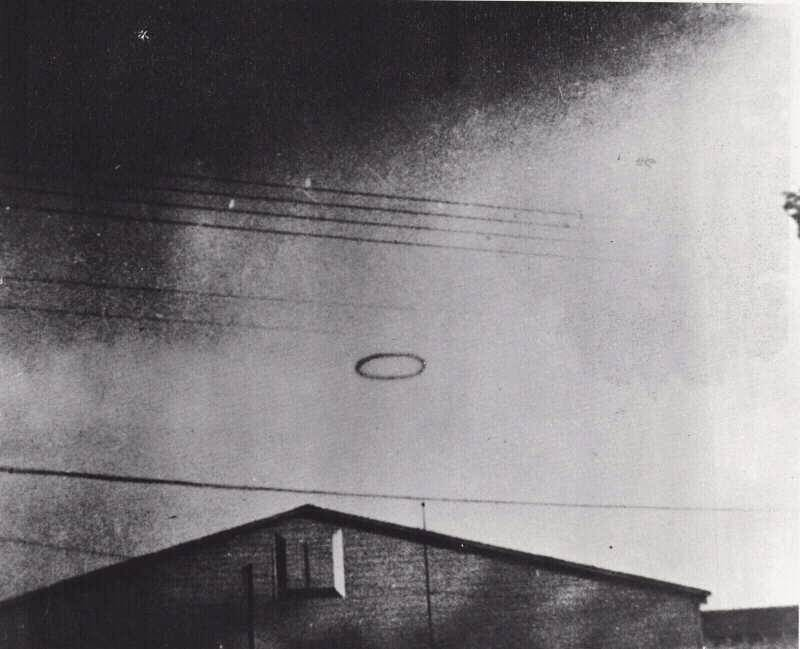 |
Un anneau noir qui fut masqu� par un nuage blanc opaque, signal� avoir �t� vu par près de 15 personnes et photographi� par le t�moin principal, est identifi� comme le produit-d�riv� d'une "d�monstration de simulation de bombe atomique" sur la base de l'arm�e.
| 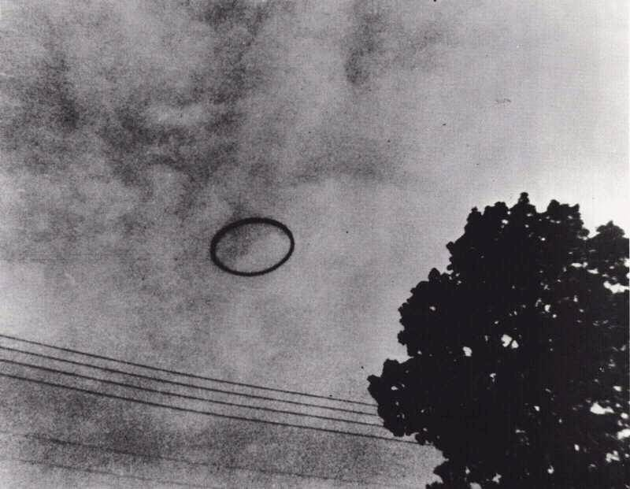 |
Heure : Approximativement 9 h.
Position : Regardant au NNE au-del� du bâtiment T741, � Fort Belvoir, Virginie.
Terrain : Collines douces aves bâtiments techniques �pars, zones r�sidentielles et for�ts.
Conditions m�t�o : Date exacte inconnue ; par cons�quent les conditions m�t�o ne sont pas accessibles. Les photographies montrent une couche de nuages �pars.
| 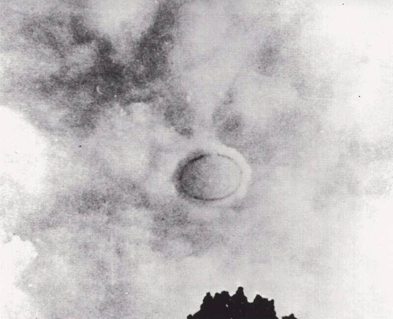 |
Le soldat X, qui travaillait comme rapporteur avec les Post Engineers (1), a livr� le r�cit suivant de l'observation visuelle et photographique. Il se trouvait dans un des multiples bâtiments donnant sur un lot de parking flanqu� des bâtiments T741 et T742 (1, 3). Quelqu'un � l'ext�rieur appela les hommes pour sortir voir l'objet curieux qui approchait au-dessus d'eux. Le pr�vôt X et plusieurs autres sortirent � temps pour voir un objet sombre, en forme d'anneau, approcher au Nord. Il courru � sa voiture dans le lot de parking et prit son appareil Kodak Brownie (1, 2, 5).
Le pr�vôt X pensa que l'anneau noir semblait solid
e, par opposition avec le fait d'�tre comme de la
fum�e
(2), bien qu'il d�clara �galement qu'il n'�tait ni m�tallique, brillant ou mat, mais tr�s noir sans
r�fl�chissements (1).
Il estima que l'anneau faisait près de 60 pieds de diam�tre et 5 � 6 pieds d'�paisseur (2, 5). Il sentit qu'il se
d�pla�ait syst�matiquement plus vite que les nuages (1), et �tait haut au-dessus du sommet des arbres
, mais
en-dessous des nuages (2). Il ne s'arr�ta pas ni ne fit du sur-place, mais se d�pla�a de mani�re continue (1) et
horizontalement (2). Debout � un endroit autant qu'il puisse s'en souvenir (1), le pr�vôt X prit 6 photographies de
l'ovni (planches 32 � 37). Entre la 2�me et la 3�me, l'anneau noir commen�a � s'envelopper dans de la fum�e
(2), bien que le pr�vôt X ne se souvienne pas avoir vu comment cela arriva ; il pensa voir �t� distrait par
l'enroulement du film de son appareil � ce moment (1). Les sources 1, 2 et 5 s'accordent quant aux circonstances et la
description de l'ovni (l'ensemble des 3 r�f�rences d�bouch�rent d'interviews avec le pr�vôt X.)
La dur�e de l'observation fut estim�e � pas plus de 5 mn (1), avec peut-�tre 30 � 60 s n�cessaires pour l'anneau noir pour �tre envelopp� par la fum�e.
En gros 15 hommes virent le ph�nom�ne, et au moins 2 le photographi�rent (1). Le pr�vôt X ne connaissait aucun de ces hommes personellement, ayant �t� affect� r�cemment � un travail dans ce bâtiment. Les efforts pour localiser les autres t�moins furent vains. Apr�s avoir regard� le nuage pendant un moment, les hommes retourn�rent � l'int�rieur sans attendre de voir ce qu'il devint. Il y eut le sentiment � ce moment que l'objet repr�sentait peut-�tre quelque type d'essai secret (1, 2, 5).
| 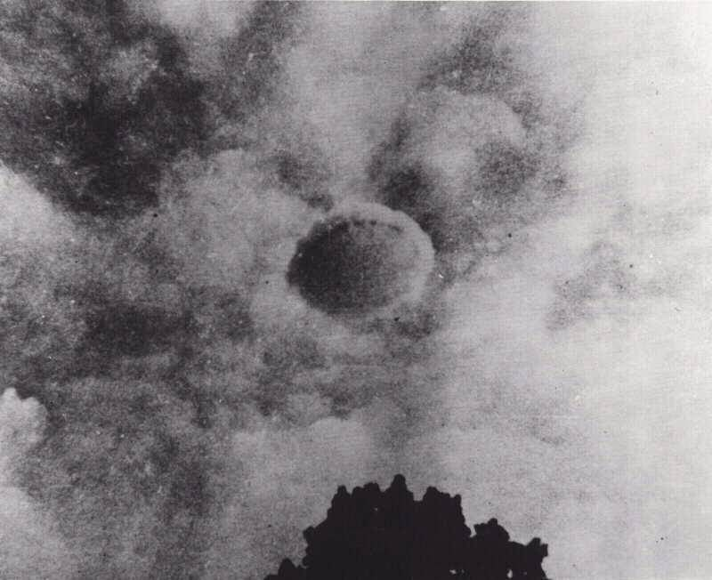 |
Le pr�vôt X pensa que l'objet �tait li� � une sorte de test ou experimentation et qu'il n'aurait peut-�tre pas d�
�tre photographi�. En cons�quence il ne fit aucune demande ou signalement � Fort Belvoir et ne fit pas d�velopper ses
photographies avant 1 mois apr�s l'incident lorsqu'il rentra chez lui (1, 2, 5). Il note : Je n'�tait qu'un soldat
dans l'Arm�e... la seule chose mentionn�e �tait que c'�tait �trange et que peut-�tre quelqu'un fait une exp�rience
et donc nous n'avons m�me dit � personne que nous avions pris ces images... Je ne voulais pas avoir d'ennuis et donc
lorsque je suis retourn� chez moi j'ai alors d�velopp� les images
(2).
Le pr�vôt X a chang� de lieu de r�sidence 5 ou 6 fois depuis que les photos ont �t� prises et les n�gatifs d'origine ont �t� �gar�s. Il a toujours l'appareil photo, un Brownie holiday, achet� en 1957 (1). Il montra les photographies � divers amis, dont la r�action fut typiquement une m�lange de plaisanterie et de raillerie. Finalement, au Printemps de 1966, il les montra � un ami qui envoya les photographies au NICAP avec une demande. Le Dr. James McDonald s'int�ressa � eux � mi-1966 et les appela � notre attention. Au regard de l'excellent mat�riel photographique nous leur avons attribu� une haute priorit�.
Concernant l'observation le pr�vôt X fut un conseiller intelligent et int�ress�. Ses suggestions pour localiser les autres t�moins indiqu�rent une tentative sinc�re d'apporter une aide dans un �claircissement de l'affaire.
Une analyse pr�liminaire fut men�e sur ce cas sur la base de laquelle il nous le consid�râmes comme potentiellement int�ressant. Les premiers tests sont bri�vement d�crits comme des exemples du type d'analyse qui nous permit de classier les signalements d'ovnis comme potentiellement importants, verifiables, et/ou explicables.
| 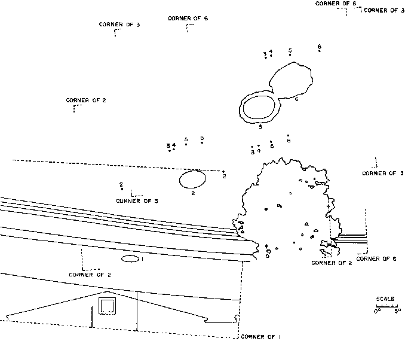 |
Les photographies recouvrent toutes un grand arbre dont le feuillage complexe ne montre aucun parallaxe v�rifiant la d�claration du pr�vôt X selon laquelle toutes les photographies furent prises d'un m�me point. Celui-ci fut d�termin� par la suite �tre au milieu du parking près du bâtiment du pr�vôt X. En superposant et "feuilletant" les 6 expositions, les mouvements des nuages de fond purent �tre suivis d'apr�s les planches 34 � 37. Le num�rotage des photographies fut trouv� coh�rent avec le mouvement des nuages. Un montage montrant l'objet et les mouvements de nuages dans les 6 images est montr� en Figure 5. Il est significatif que les espacements relatifs des positions de l'ovni comme des nuages soient les m�mes ; ceci est un argument contre une fabrication cr��e par dessin de l'objet sur les 6 photographies, parce qu'une telle fabrication n�cessiterait une certaine sophistication de la part de l'artiste.
Les pauses relativement longues apr�s les expositions 1 et 2, et l'�clat soudain des expositions 3 et 4, suivi par la paire quelque peu plus lente 5 et 6, sont jug�es �tre psychologiquement coh�rentes avec l'observation soudaine que l'anneau noir remarquable s'enveloppait, encore plus remarquablement, d'un nuage blanc et brumeux avant l'exposition (3).
| 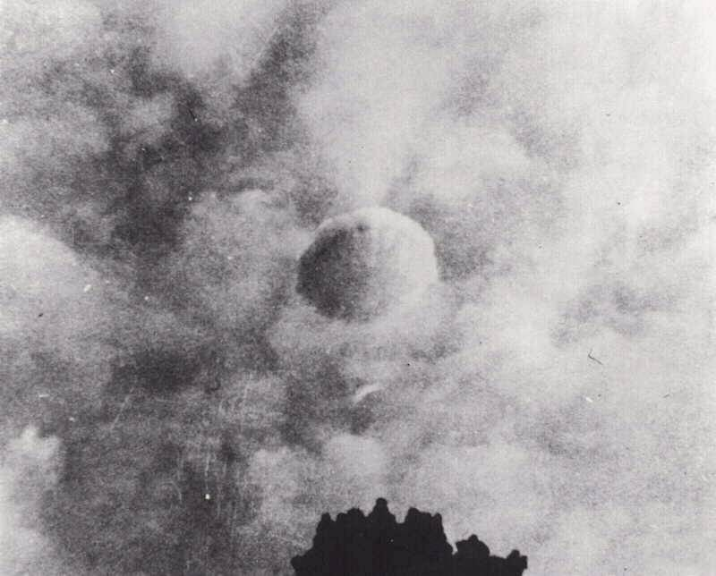 |
Si un disque ou anneau plat se d�place dans son plan parall�le au sol (le mode de vol habituellement associ� aux "soucoupes volantes"), l'angle d'inclinaison observ� (observateur-centre-anneau) devrait �tre �gal � l'altitude observ�e. Une hypoth�se initiale fut que ces photos pourraient repr�senter une fabrication optique avec une image dessin�e sur les photographies r�alis�e auparavant. Il �tait important de tester la coh�rence g�om�trique des images avec des tests plus sophistiqu�s que ceux auxquels pourrait s'attendre l'auteur d'un canular. Le Tableau 4 montre les r�sultats de ces mesures.
| Photo | Inclinaison | Altitude | Angle de pitch |
|---|---|---|---|
| 1 | 19,9 � | 16 � | 4 � |
| 2 | 42,0 | 31 | 11 |
| 3 | 46,8 | 47 | 0 |
| 4 | 48,1 | 48 | 0 |
| 5 | 49,0 | 49 | 0 |
| 6 | 49,1 | 51 | 2 |
Un d�part du vol horizontal ne semble appara�tre que sur la planche 33. D'apr�s l'attitude apparente de l'anneau dans cette photo il est jug� �tre en dehors non seulement du le plan vertical de l'observateur de l'ovni, mais aussi dans le plan vertical perpendiculaire � celui-ci. N�anmoins, il est conclu que l'anneau et un nuage en forme de disque peuvent �tre d�crits comme orient� essentiellement horizontalement, avec des perturbations ressemblant � des "oscillations".
| 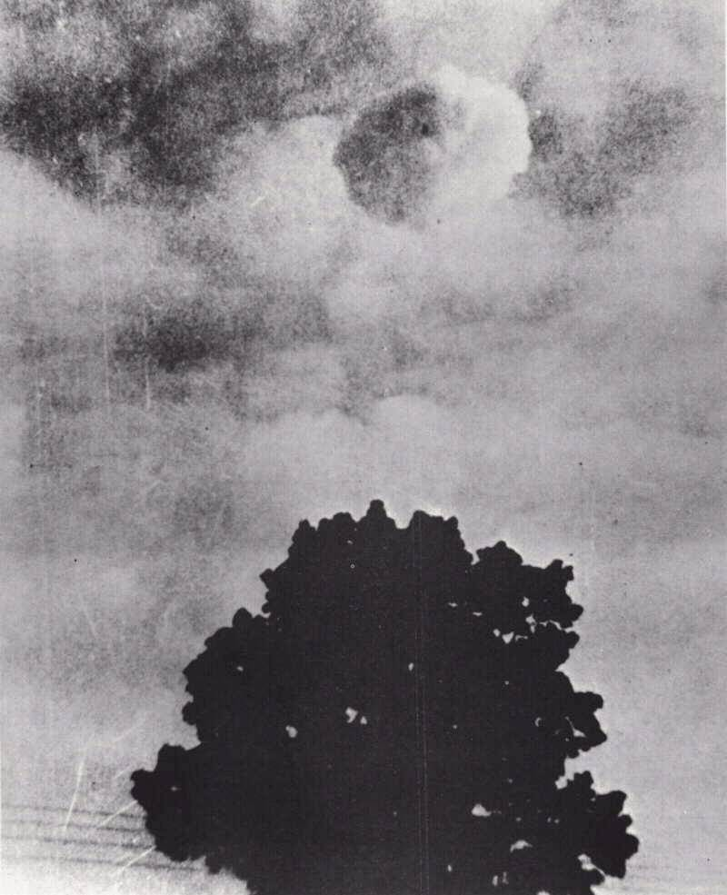 |
Si le diam�tre lin�aire de l'ovni est D et le diam�tre angulaire Delta, et si sa hauteur verticale est Z et son altitude Alpha, alors (si Delta est petit),
| sin Delta
sin Alpha |
= | D
Z |
si l'objet se d�place selon une trajectoire globalement parall�le au sol. On a l'impression subjective, d'apr�s le t�moignage comme d'apr�s les photos, que tel fut le mouvement dans ce cas. Le Tableau 5 montre les r�sultats des mesures de cette sorte (faites avec une �chelle milimetr�e sur les tirages). Il est conclut que dans des tol�rances de 7 %, l'objet s'est d�plac� sur une trajectoire globalement parall�le au sol, bien qui ait pu monter et s'�tendre lentement.
| D
Z |
= | sin Delta
sin Alpha |
| Photo | sin Delta
sin Alpha |
|---|---|
| 1 | 0,181 |
| 2 | 0,170 |
| 3 | 0,141 |
| 4 | 0,147 |
| 5 | 0,146 |
Un autre �l�ment de preuve contre une fabrication optique est la coh�rence subtile entre l'illumination du nuage et les lois de la physique. En Planche 34 lorsque le nuage se forme pour la 1�re fois, il est t�nu. La profondeur optique est faible, de sorte que nous pouvons toujours voir l'anneau sombre � l'int�rieur assez clairement. La lumière du Soleil vient d'en haut � droite. Si la profondeur optique est faible, la lumière du Soleil doit passer � travers le nuage avec une diminution mod�r�e seulement. Par cons�quent, aucune ombre forte ne peut �tre form�e sur le côt� "sombre" de nuage, comme cela est montr� par la photographie.
Dans les planches 35 � 37, le nuage se d�veloppe et devient opaque. L'anneau sombre devient invisible, et un structure cumuloforme peut �tre observ�e. En Planche 37, le nuage est plutôt blanc et opaque, comme un nuage cumulus dense. Le profondeur optique est grande ; la lumière du Soleil doit �tre absorb�e et des ombres se former. Ceci est �galement montr� par la photographie.
Il est improbable que les tirages aient �t� fabriqu�s en utilisant un a�rographe, l'artiste aurait pens�, m�me intuitivement, � �tablir cette coh�rence. Ce test, comme les autres, am�ne � la conclusion que les donn�es sont coh�rentes avec un objet r�el devenant d'abord envelopp� dans un nuage t�nu, puis opaque.
Le fait que les 6 photos se recoupent pr�te un int�r�t au cas, compar� � ceux avec des fonds nettements diff�rents dans des s�quences de photos pr�tendumment continues. La d�couverte plutôt subtile des mouvements du nuage dans le fond du ciel a confirm� que les photos �taient vraiment prises dans l'ordre signal�. Le fait que les espacements de l'ovni �taient coh�rents avec les espacements des nuages ne soutient pas l'hypoth�se d'une fabrication optical avec une image sur laquelle on aurait dessin�. Le coh�rence psychologique de l'espacement des expositions ajoute de la cr�dibilit�.
| 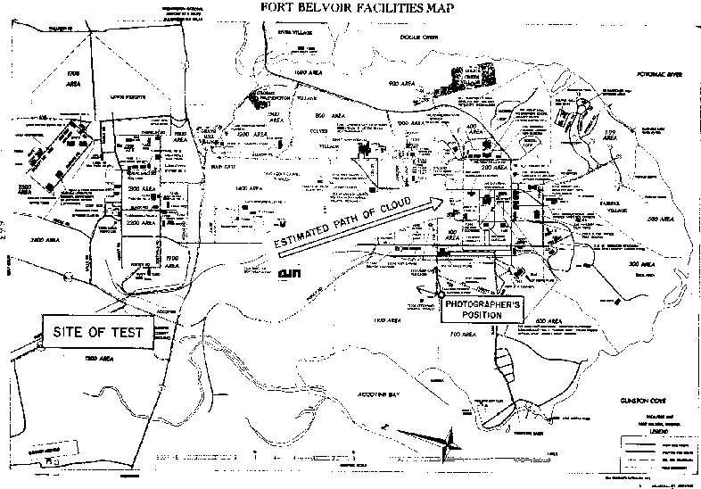 |
Enfin, et peut-�tre le plus significatif, l'ovni se d�pla�ait avec un mouvement vectoriel approximativement �gal au mouvement vectoriel du nuage de fond ; i.e. les directions et vitesses angulaires �taient pratiquement les m�mes. Ceci sugg�ra une fois que l'ensemble de l'apparition d�rivait avec le vent, une conclusion coh�rente avec l'apparition du nuage fumeux.
La vitesse approximative et la hauteur des nuages du fond et les intervalles de temps entre les photos sont connus, on peut d�river une distance approximative, et donc une taille, pour l'ovni comme une fonction de la hauteur des ovnis en utilisant les vitesses angulaires du nuage et de l'ovni observ�. Bien que la date exacte soit inconnue et par cons�quent les donn�es m�t�o non disponibles, nous n'avons besoin que de donn�es d'un ordre de magnitude, puisques les dimensions de l'ovni sont a priori peu connues. Un mod�le g�om�trique et des param�tres estim�s furent utilis�s de cette mani�te pour estimer le diam�tre et la distance de l'anneau. L'observation que l'ovni d�rive doucement et dans approximativement la m�me direction et avec la m�me vitesse angulaire que les nuages permet de supposer raisonnablement que l'ovni est � une fraction appr�ciable de la hauteur des nuages, et suffisamment grand et haut pour �tre hors de de la r�gion des remous du sol.
Avec ces suppositions, en utilisant 20 miles/h comme la vitesse du vent � l'altitude du nuage, et diverses valeurs raisonnables pour l'altitude du nuage et des intervalles de temps, la supposition que l'objet �tait plus haut que 1/10�me de la hauteur du nuage, permet une grossi�re estimation du diam�tre de l'anneau entre 30 et 600 pieds. Encore une fois, la conclusion fut que l'ensemble des donn�es sont compatibles avec un objet grand, inhabituel, et r�el.
Le cas vint � l'origine du Dr. James McDonald du NICAP. Bien que nous ne f�mes aucun effort pour le publier, il fut d�crit dans un article de magazine par Ralph Rankow (1967). Rankow le pr�senta comme un myst�re complet, mais cet article g�n�ra une lettre de Jack Strong, �tudiant diplôm� de l'Universit� du Wisconsin, qui dit avoir �t� pr�sent aux essais de d�monstration de bombe � Fort Belvoir, et d�crivit les nuages issus de ces essais. A cette �poque la suggestion ne fut pas prise en compte tr�s s�rieusement, aucunes des personnes impliqu�es n'imaginant qu'un tel ph�nom�ne puisse �tre produit par une explosion.
| 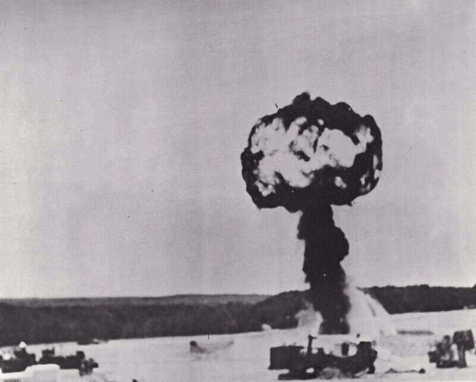 |
Le sergent-major A. M. Wagner, interrog� � Fort Belvoir, identifia imm�diatement les images comme montrant un nuage
produit par des d�monstrations de simulation de bombe
qui �taient fr�quemment men�es � Fort Belvoir pour les
officiels en visite ou les cadets militaires. Cette identification fut faite sans mention d'une telle hypoth�se. Avant
que la g�ometrie de la situation ne soit discut�e, le sergent-major Wagner montra une carte de la base et la
localisation du site de d�monstration de bombe. Il �tait clair que l'anneau et le nuage sur les photographies
d�rivaient du site de mani�re radiale (voir Fig. 6).
Le sergent-major A. Husted confirma ceci par la suite et d�crivit la technique de l'explosion. 5 f�ts d'essence de 55-galons, du carburant diesel, TNT, et du phosphore blanc sont arrang�s en cercle et fait explos�s. L'explosion projette une boule de feu envelopp�e de fum�e noire. Le sommet du nuage en forme de champignon est un anneau de vortex stable, qui finit par d�river au loin. D�pendant de la m�t�o et des conditions de l'explosion, cet anneau ne se forme parfois jamais et � d'autres moment forme un cercle parfait et persistant. D'apr�s le sergent-major Husted, le phosphore blanc produit une fum�e blanche qui finit par envelopper le vortex noir produit par le carburant diesel. Il estima que le vortex avait parfois tenu jusqu'� 40 mn.
Strong, qui pense avoir vu le m�me vortex que celui qui fut photographi� dans ce cas, fait les remarques suivantes :
Je me souviens que l'anneau pouvait �tre vu tournant rapidement jusqu'au moment o� le nuage se d�veloppant
obscurcit les d�tails. Par "tourner" je veux dire, bien s�r, un mouvement de la ligne centrale du vortex
[pas
autour de l'axe vertical]. Je ne me souviens pas de la direction de cette r�volution, si elle �tait vers le haut ou
vers le bas � travers le centre... Cette rotation rapide, avec le calme de l'air, avaient s�rement beaucoup � voir
avec la grande stabilit� et symm�trie du vortex.
Les photographies de l'un des essais furent obtenues via le sergent-major Husted. Les planches 38, 39 et 40 furent faites par le sergent 1�re classe James O'Dell et montrent la premi�re �tape d'un tel essai, jusqu'� la production d'un vortex noir ind�pendant.
Les dimensions de l'anneau sont estim�es d'apr�s les photographies O'Dell comme �tant les suivantes : diam�tre ~200 pieds pour la boule de feu en planche 38, et 260 � 300 pieds pour le diam�tre ext�rieur de l'anneau dans la planche 40. D'apr�s les diam�tres angulaires d'environ 6 � dans les planches 32 � 37, et la distance de ligne de vis�e estim�e de 5000 pieds, un diam�tre d'environ 500 pieds est d�riv� du moment o� l'anneau passait près du t�moin. Ces chiffres sont coh�rents avec l'expansion attendue de l'anneau, et avec les seules estimations d'apr�s les photographies (planches 32-37).
| 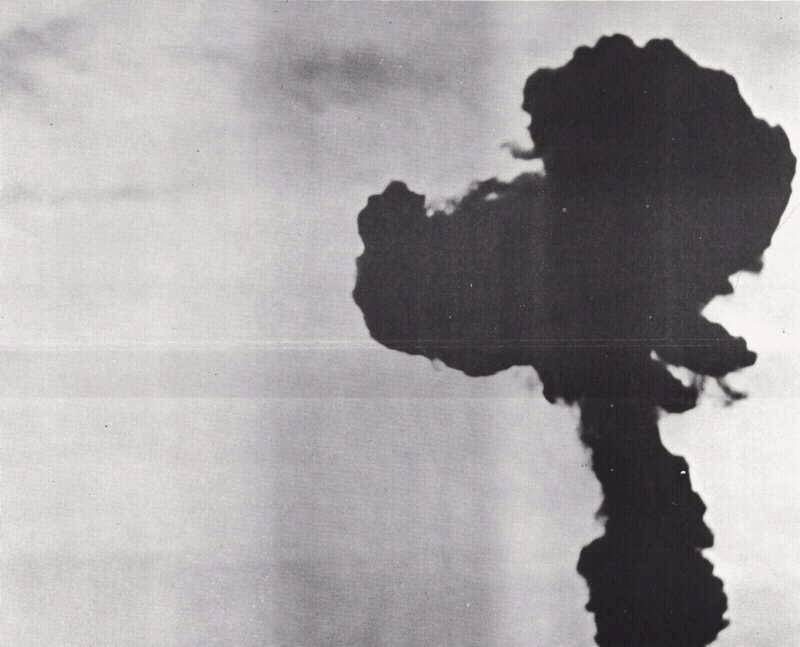 |
Il y a, d'un autre côt�, des indications d'une fabrication possible des photographies. Avec une inspection minutieuse, la planche 33 r�v�le un ensemble de griffures ou stries radiales autour des bordures ext�rieures et int�rieures de l'anneau noir. Chaque marque est d'une longueur comparable � la largeur de l'anneau ; le motif est reminiscent of iron filings near a magnet. Il est concevable que ces marques repr�sentent une retouche de l'anneau du vortex d'origine de ring pour le faire appara�tre plus r�gulier et ainsi plus intriguant. Il est �galement concevable qu'ils repr�sentent une �tape naturelle dans la formation du nuage blanc. Au regard de l'identification cat�gorique de l'�v�nement dans son ensemble et de son irrelevance cons�quente avec les ovnis, cette question n'a pas �t� poursuivie plus avant.
A la lumière des identifications par des responsables de Fort Belvoir et d'autres observateurs techniquement comp�tents familiers de l'�v�nement, ce cas est consid�r� comme positivement identifi� comme une d�monstration de simulation de bombe atomique du type courramment men� � Fort Belvoir durant cette p�riode.
| 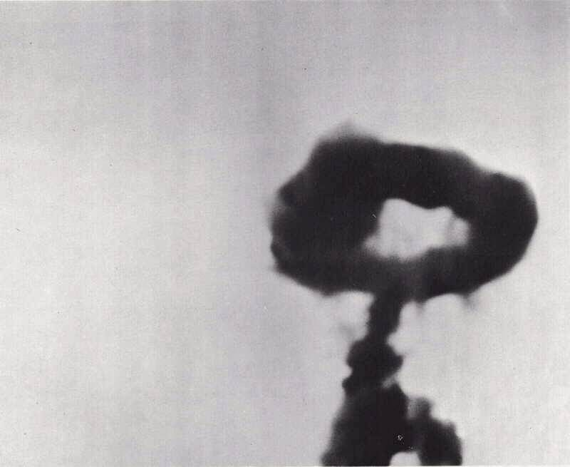 |
Le fait que ce cas n'ait pas �t� �clairci avant 9 ans suivant son occurence parce que le t�moin avait peur du ridicule ou de r�primandes possibles pour infractions relatives � la s�curit� militaire t�moigne de la r�alit� du probl�me des "donn�es cach�es" dans les �tudes sur les ovnis.
Sources d'information :
{kind=link}
{kind=link}
{kind=link}
{kind=link}
{kind=link}
{kind=link}
{kind=link}
{kind=link}
{kind=link}